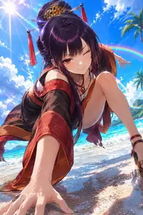

VISITOR 04 / CHARACTER FILE
SCARLETDANCER
朱夏の舞姫
THE BOLD STAR OF THE SUMMER SKY
庭園の静けさを、笑顔ひとつで祝祭に変えてしまう朱の来訪者。
迷うより先に手を差し出し、楽しい方へ全員を引っ張っていく。彼女が立つ場所は自然と視線が集まる舞台になり、夕映えの空中庭園では誰よりも鮮やかに映える。
BOLDSCARLETSUNSETSHOWTIME
THEME COLORScarlet Sunset
FAVORITE PLACE南側のサンデッキ
MOTIF夕陽・舞台・情熱
04
FOURTH VISITOR